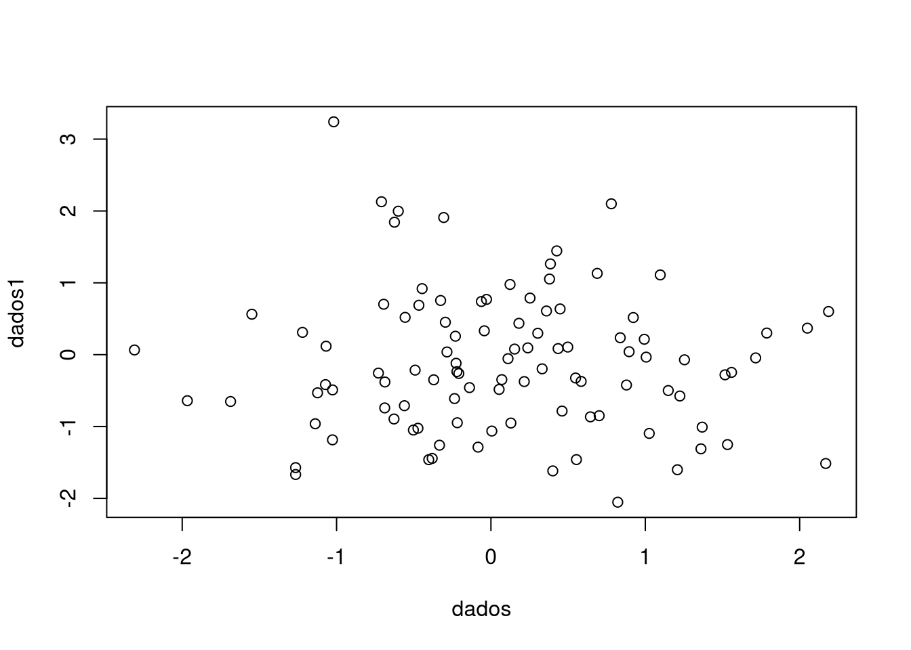

6 Exemplo utilizando points
plot(table(rep(1:5,1:5)))
polygon(c(1,5,5,1), c(0,0,5,1), col = "blue")
6.0.1 Símbolos e Tipos de Linhas
6.0.2 Texto E Legendas
6.0.3 Função par
Parametros gráficos
xlogylogadjannaskbgbtycexcex.axiscex.labcex.maincex.subcincolcol.axiscol.labcol.maincol.subcracrtcsicxydinerrfamilyfgfigfinfontfont.axisfont.labfont.mainfont.sublablaslendlheightljoinlmitreltylwdmaimarmexmfcolmfgmfrowmgpmkhnewomaomdomipagepchpinpltpsptysmosrttcktclusrxaxpxaxsxaxtxpdyaxpyaxsyaxtylbias